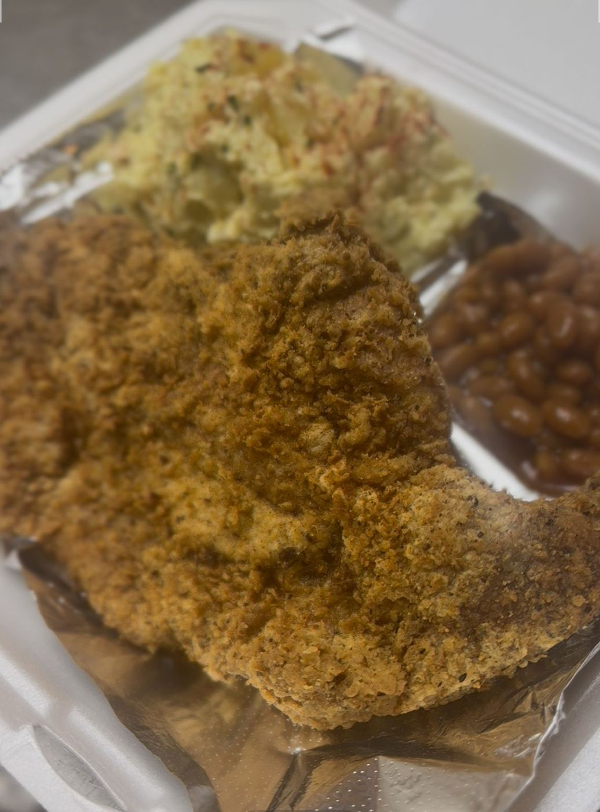

About
BBQ and soul food on S James St with a “chill atmosphere” and “amazing customer service.” People drive in from Little Rock for it.
Collard greens
Smoked mac & cheese
Okra

BBQ and soul food on S James St with a “chill atmosphere” and “amazing customer service.” People drive in from Little Rock for it.